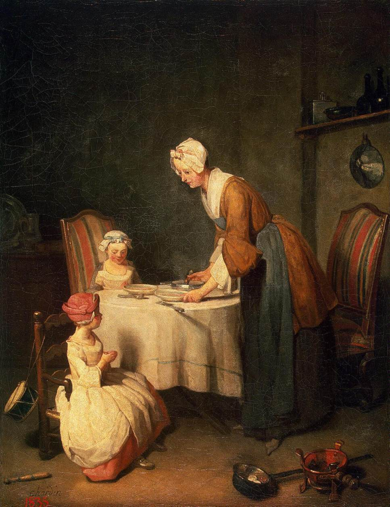

Գեղանկարչությունը մարդկային աշխատանքի զարգացած ձևերից մեկն է և առարկայական, գեղագիտական արժեքների ստեղծման ոլորտ։Ինչպես և արվեստի մյուս տեսակները, գեղանկարչությունը ճանաչողական և գաղափարական խնդիրներ է իրագործում, ստեղծում մարդու, Բնություն առարկաների, պատմական և հասարակական երևույթների գեղարվեստական պատկերներ։ Գեղանկարչության բազմաթիվ ստեղծագործություններ ունեն փաստա-ինֆորմացիոն արժեք:
Գեղանկարչությունը օգտվում է գույնի, գծանկարի, կոմպոզիցիայի, ռիթմի լույսի և ստվերի ընձեռած հնարավորություններից, որոնք նպաստում են հարթության վրա վերակենդանացնել իրականությունը, ստեղծել ծավալի ու տարածության պատրանք, հոգեբանական կերպարներ, կենդանի ու անշունչ առարկաներ՝ ստատիկ ու շարժուն վիճակներում։Գեղանկարչության հիմնական արտահայտչամիջոցը գույնն է։ Կազմակերպված և իմաստավորված գույնը՝ կոլորիտը, ոչ միայն տալիս է ռեալ իրականության գունապատկերը, այլև օժտված է զգայական ներգործության մեծ ուժով։Գունային կոմպոզիցիան ապահովում է ստեղծագործության գունային որոշակի ամբողջականությունը։ Գեղանկարչության մյուս արտահայտչամիջոցը՝ գծանկարը (գիծ և լուսաստվեր), ռիթմով և կոմպոզիցիայով գույնի հետ կազմակերպում են պատկերը։
Գեղանկարչությունը առաջացել է դեռևս ուշ քարի դարում։ Պահպանվել են ժայռապատկերներ
( Ֆոն դե Գոմ քարայրերը Ֆրանսիայում, Ալտամիրը՝ Հյուսիսային Իսպանիայում),
որոնք կատարված են հողաներկերով։ Արևելքի հնագույն երկրներում (հատկապես Հին Եգիպտոսում)
և Ամերիկայում գոյություն է ունեցել մոնումենտալ գեղանկարչություն։ Հին Հունաստանում ֆրեսկոների և
խճանկարների կողքին տեղ է գտել նաև հաստոցային նկարչությունը (հաճախ տախտակի, մասամբ՝ կտավի վրա)
հիմնականում մոմանկարչության տեխնիկայով։
Գեղանկարչությունը մեծ վերելք է ապրել Վերածննդի դարաշրջանում։
Այդ արվեստի նախակարապետներից էր XIV դարի իտալացի նկարիչ Ջոտտո դի Բոնդոնեն։
Հեռանկարի, օպտիկայի և անատոմիայի գիտական ուսումնասիրումը, Յան վան Էյքի
(Նիդերլանդներ) կատարելագործած յուղաներկի տեխնիկայի կիրառումը գեղանկարչության առաջընթացի մեծ հնարավորություններ են
ընձեռել (լուսաստվերային կերպավորման օգնությամբ ծավալային ձևերի համոզիչ վերարտադրություն, աշխարհի գունային
հարստության յուրացում)։ Վերածննդի խոշորագույն գեղանկարիչներից են Մազաչչոն, Պիեռա Դելլա Ֆրանչեսկան, Ա.
Մանտենիան, Բոտտիչելլին, Լեոնարդո դա Վինչին, Միքելանջելոն, Ռաֆայելը, Ջորշոնեն, Տիցիանը, Պաոլո Վերոնեզեն,
Յակոպո Տինտորետտոն Իտալիայում, Յան վան Էյքը, Պիտեր Բրեյգելը Նիդերլանդներում, Ալբրեխտ Դյուրերը, Հանս Հոլբայն
Կրտսերը, Մ․ Նիթհարդը (Գրյունեվալդ) Գերմանիայում։
Գեղանկարչություն տերմինը հայերենում ունի իր հոմանիշները․ գունանկար, գունանկարչություն, գունագրություն, կենդանագիր, կենդանագրություն, երփնագիր։ Ներկա իմաստով գեղանկարչությունը նոր տերմին է։ Հնում կիրառվել են «կենդանագիրը» և «երփնագիրը», որոնք վկայված են դեռևս վաղ միջնադարից։ «Երփնագիրը» մեր լեզվի պատմական զարգացման ինչ-որ փուլում դուրս է մնացել ակտիվ գործածությունից ու, ինչպես և «կենդանագիրը», իր ստեղծագործական իմաստով պահպանվել է բառարաններում։
Վերոհիշյալ անձանց առաջարկով այն կրկին դրվել է գործածության մեջ։